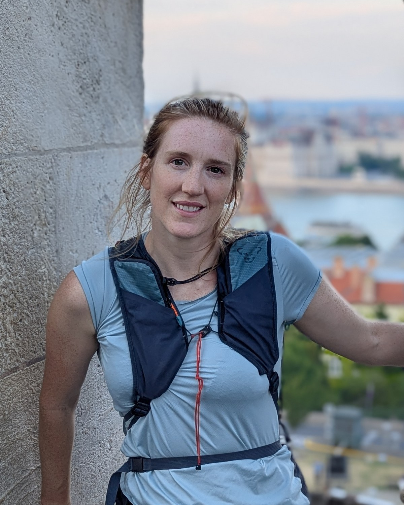

Dr. Erika C. Freeman Carbon Biogeochemist
Bio
I’m Erika, a researcher at the Leibniz-Institut für Gewässerökologie und Binnenfischerei (IGB) in Berlin. I study how carbon moves through aquatic systems and what this means for human wellbeing. Most of my days go to the ecology of molecules, an idea I love that brings ecological thinking to molecular biogeochemistry.
Before IGB I trained at some wonderful places: a postdoc at Eawag, the ETH Domain’s Swiss Federal Institute of Aquatic Science and Technology, and a PhD in biogeochemistry (2024) at the University of Cambridge, where I was a Gates Cambridge Fellow. I’m grateful to the brilliant people who shaped me along the way, and just as happy to have taken what they taught me and run somewhere of my own.
Outside the lab I’ve worn a few other hats too: life-cycle assessments at a UK food-tech start-up (Foodsteps) and corporate waste management back in Canada (Hydro One).
And when I’m not at the office, you’ll usually find me doing irresponsible amounts of running and climbing, or out exploring the great out-the-door with my partner.
My passions
Scientific rigour, ecosystem management, teamwork and collaboration, fun and comedy, women’s rights and equity, mental and physical wellbeing, and community and kindness.
My expertise
- Advanced analytical chemistry techniques
- Environmental monitoring
- Data analysis and interpretation
- Logistics and fieldwork
- Project management
- Cross-sector collaboration